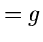

|
Theorem.
1) A maximally inflected quintic with 4
cusps
and 1 flex has either 1 or 2 () real nodes.
2)
A maximally inflected sextic with 6 cusps
has either 3 or 4 () real nodes.
|

| |
|
|
Proof:
1) Such a curve is dual to a maximally inflected quartic with 1
cusp and 4 flexes.
2) Such a curve is dual to a maximally inflected quartic with
6 flexes.
These curves always have the geometry displayed below.

|